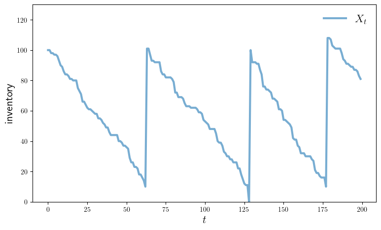
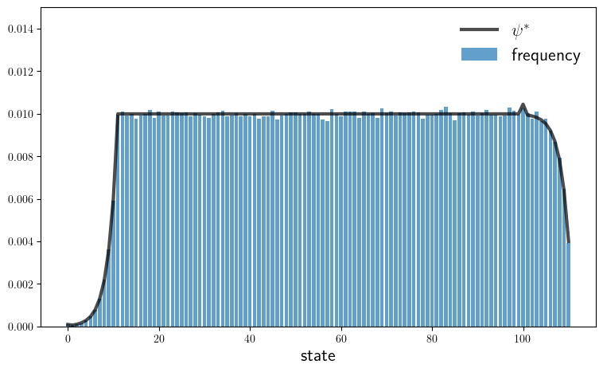

Chapter 3: Markov Dynamics#
Contents
inventory_sim.jl#
Show code cell source
using Distributions, IterTools, QuantEcon
function create_inventory_model(; S=100, # Order size
s=10, # Order threshold
p=0.4) # Demand parameter
ϕ = Geometric(p)
h(x, d) = max(x - d, 0) + S*(x <= s)
return (; S, s, p, ϕ, h)
end
"Simulate the inventory process."
function sim_inventories(model; ts_length=200)
(; S, s, p, ϕ, h) = model
X = Vector{Int32}(undef, ts_length)
X[1] = S # Initial condition
for t in 1:(ts_length-1)
X[t+1] = h(X[t], rand(ϕ))
end
return X
end
"Compute the transition probabilities and state."
function compute_mc(model; d_max=100)
(; S, s, p, ϕ, h) = model
n = S + s + 1 # Size of state space
state_vals = collect(0:(S + s))
P = Matrix{Float64}(undef, n, n)
for (i, j) in product(1:n, 1:n)
P[i, j] = sum((h(i-1, d) == j-1)*pdf(ϕ, d) for d in 0:d_max)
end
return MarkovChain(P, state_vals)
end
"Compute the stationary distribution of the model."
function compute_stationary_dist(model)
mc = compute_mc(model)
return mc.state_values, stationary_distributions(mc)[1]
end
# Plots
using PyPlot
using LaTeXStrings
PyPlot.matplotlib[:rc]("text", usetex=true) # allow tex rendering
function plot_ts(model; fontsize=16,
figname="../figures/inventory_sim_1.pdf",
savefig=false)
(; S, s, p, ϕ, h) = model
X = sim_inventories(model)
fig, ax = plt.subplots(figsize=(9, 5.2))
ax.plot(X, label=L"X_t", lw=3, alpha=0.6)
ax.set_xlabel(L"t", fontsize=fontsize)
ax.set_ylabel("inventory", fontsize=fontsize)
ax.legend(fontsize=fontsize, frameon=false)
ax.set_ylim(0, S + s + 20)
if savefig == true
fig.savefig(figname)
end
end
function plot_hist(model; fontsize=16,
figname="../figures/inventory_sim_2.pdf",
savefig=false)
(; S, s, p, ϕ, h) = model
state_values, ψ_star = compute_stationary_dist(model)
X = sim_inventories(model; ts_length=1_000_000)
histogram = [mean(X .== i) for i in state_values]
fig, ax = plt.subplots(figsize=(9, 5.2))
ax.plot(state_values, ψ_star, "k-", lw=3, alpha=0.7, label=L"\psi^*")
ax.bar(state_values, histogram, alpha=0.7, label="frequency")
ax.set_xlabel("state", fontsize=fontsize)
ax.legend(fontsize=fontsize, frameon=false)
ax.set_ylim(0, 0.015)
if savefig == true
fig.savefig(figname)
end
end
plot_hist (generic function with 1 method)
model = create_inventory_model()
(S = 100, s = 10, p = 0.4, ϕ = Geometric{Float64}(p=0.4), h = var"#h#4"{Int64, Int64}(100, 10))
plot_ts(model; savefig=true)

plot_hist(model; savefig=true)

is_irreducible.jl#
Show code cell source
using QuantEcon
P = [0.1 0.9;
0.0 1.0]
mc = MarkovChain(P)
print(is_irreducible(mc))
false
laborer_sim.jl#
Show code cell source
function create_laborer_model(; α=0.3, β=0.2)
return (; α, β)
end
function laborer_update(x, model) # update X from t to t+1
(; α, β) = model
if x == 1
x′ = rand() < α ? 2 : 1
else
x′ = rand() < β ? 1 : 2
end
return x′
end
function sim_chain(k, p, model)
X = Array{Int32}(undef, k)
X[1] = rand() < p ? 1 : 2
for t in 1:(k-1)
X[t+1] = laborer_update(X[t], model)
end
return X
end
function test_convergence(; k=10_000_000, p=0.5)
model = create_laborer_model()
(; α, β) = model
ψ_star = (1/(α + β)) * [β α]
X = sim_chain(k, p, model)
ψ_e = (1/k) * [sum(X .== 1) sum(X .== 2)]
error = maximum(abs.(ψ_star - ψ_e))
approx_equal = isapprox(ψ_star, ψ_e, rtol=0.01)
println("Sup norm deviation is $error")
println("Approximate equality is $approx_equal")
end
test_convergence (generic function with 1 method)
markov_js.jl#
Show code cell source
"""
Infinite-horizon job search with Markov wage draws.
"""
using QuantEcon, LinearAlgebra
include("s_approx.jl")
"Creates an instance of the job search model with Markov wages."
function create_markov_js_model(;
n=200, # wage grid size
ρ=0.9, # wage persistence
ν=0.2, # wage volatility
β=0.98, # discount factor
c=1.0 # unemployment compensation
)
mc = tauchen(n, ρ, ν)
w_vals, P = exp.(mc.state_values), mc.p
return (; n, w_vals, P, β, c)
end
" The Bellman operator Tv = max{e, c + β P v} with e(w) = w / (1-β)."
function T(v, model)
(; n, w_vals, P, β, c) = model
h = c .+ β * P * v
e = w_vals ./ (1 - β)
return max.(e, h)
end
" Get a v-greedy policy."
function get_greedy(v, model)
(; n, w_vals, P, β, c) = model
σ = w_vals / (1 - β) .>= c .+ β * P * v
return σ
end
"Solve the infinite-horizon Markov job search model by VFI."
function vfi(model)
v_init = zero(model.w_vals)
v_star = successive_approx(v -> T(v, model), v_init)
σ_star = get_greedy(v_star, model)
return v_star, σ_star
end
# == Policy iteration == #
"Get the value of policy σ."
function get_value(σ, model)
(; n, w_vals, P, β, c) = model
e = w_vals ./ (1 - β)
K_σ = β .* (1 .- σ) .* P
r_σ = σ .* e .+ (1 .- σ) .* c
return (I - K_σ) \ r_σ
end
"Howard policy iteration routine."
function policy_iteration(model)
σ = Vector{Bool}(undef, model.n)
i, error = 0, 1.0
while error > 0
v_σ = get_value(σ, model)
σ_new = get_greedy(v_σ, model)
error = maximum(abs.(σ_new - σ))
σ = σ_new
i = i + 1
println("Concluded loop $i with error $error.")
end
return σ
end
# == Plots == #
using PyPlot
using LaTeXStrings
PyPlot.matplotlib[:rc]("text", usetex=true) # allow tex rendering
fontsize=16
default_model = create_markov_js_model()
function plot_main(; model=default_model,
method="vfi",
savefig=false,
figname="../figures/markov_js_1.pdf")
(; n, w_vals, P, β, c) = model
if method == "vfi"
v_star, σ_star = vfi(model)
else
σ_star = policy_iteration(model)
v_star = get_value(σ_star, model)
end
h_star = c .+ β * P * v_star
e = w_vals / (1 - β)
fig, ax = plt.subplots(figsize=(9, 5.2))
ax.plot(w_vals, h_star, lw=4, ls="--", alpha=0.4, label=L"h^*(w)")
ax.plot(w_vals, e, lw=4, ls="--", alpha=0.4, label=L"w/(1-\beta)")
ax.plot(w_vals, max.(e, h_star), "k-", alpha=0.7, label=L"v^*(w)")
ax.legend(frameon=false, fontsize=fontsize)
ax.set_xlabel(L"w", fontsize=fontsize)
if savefig
fig.savefig(figname)
end
end
plot_main (generic function with 1 method)
plot_main(savefig=true)
Completed iteration 25 with error 0.7358325123867289.
Completed iteration 50 with error 0.21393801675839796.
Completed iteration 75 with error 0.07487776205154262.
Completed iteration 100 with error 0.027611709626683023.
Completed iteration 125 with error 0.010342258331803578.
Completed iteration 150 with error 0.003927827162073072.
Completed iteration 175 with error 0.0014931447809232168.
Completed iteration 200 with error 0.0005676247519232902.
Completed iteration 225 with error 0.00021578485559814453.
Completed iteration 250 with error 8.203149057806058e-5.
Completed iteration 275 with error 3.1184604821987705e-5.
Completed iteration 300 with error 1.1854954379941773e-5.
Completed iteration 325 with error 4.5067091605233145e-6.
Completed iteration 350 with error 1.7132437903910613e-6.
Terminated successfully in 365 iterations.
markov_js_with_sep.jl#
Show code cell source
"""
Infinite-horizon job search with Markov wage draws and separation.
"""
include("s_approx.jl")
using QuantEcon, LinearAlgebra
"Creates an instance of the job search model with separation."
function create_js_with_sep_model(;
n=200, # wage grid size
ρ=0.9, ν=0.2, # wage persistence and volatility
β=0.98, α=0.1, # discount factor and separation rate
c=1.0) # unemployment compensation
mc = tauchen(n, ρ, ν)
w_vals, P = exp.(mc.state_values), mc.p
return (; n, w_vals, P, β, c, α)
end
" The Bellman operator for the value of being unemployed."
function T(v, model)
(; n, w_vals, P, β, c, α) = model
d = 1 / (1 - β * (1 - α))
accept = d * (w_vals + α * β * P * v)
reject = c .+ β * P * v
return max.(accept, reject)
end
" Get a v-greedy policy."
function get_greedy(v, model)
(; n, w_vals, P, β, c, α) = model
d = 1 / (1 - β * (1 - α))
accept = d * (w_vals + α * β * P * v)
reject = c .+ β * P * v
σ = accept .>= reject
return σ
end
"Solve by VFI."
function vfi(model)
v_init = zero(model.w_vals)
v_star = successive_approx(v -> T(v, model), v_init)
σ_star = get_greedy(v_star, model)
return v_star, σ_star
end
# == Plots == #
using PyPlot
using LaTeXStrings
PyPlot.matplotlib[:rc]("text", usetex=true) # allow tex rendering
fontsize=16
default_model = create_js_with_sep_model()
function plot_main(; model=default_model,
method="vfi",
savefig=false,
figname="../figures/markov_js_with_sep_1.pdf")
(; n, w_vals, P, β, c, α) = model
v_star, σ_star = vfi(model)
d = 1 / (1 - β * (1 - α))
accept = d * (w_vals + α * β * P * v_star)
h_star = c .+ β * P * v_star
w_star = Inf
for (i, w) in enumerate(w_vals)
if accept[i] ≥ h_star[i]
w_star = w
break
end
end
@assert w_star < Inf "Agent never accepts"
fig, ax = plt.subplots(figsize=(9, 5.2))
ax.plot(w_vals, h_star, lw=4, ls="--", alpha=0.4, label="continuation value")
ax.plot(w_vals, accept, lw=4, ls="--", alpha=0.4, label="stopping value")
ax.plot(w_vals, v_star, "k-", alpha=0.7, label=L"v_u^*(w)")
ax.legend(frameon=false, fontsize=fontsize)
ax.set_xlabel(L"w", fontsize=fontsize)
if savefig
fig.savefig(figname)
end
end
function plot_w_stars(; α_vals=LinRange(0.0, 1.0, 10),
savefig=false,
figname="../figures/markov_js_with_sep_2.pdf")
w_star_vec = similar(α_vals)
for (i_α, α) in enumerate(α_vals)
print(i_α, α)
model = create_js_with_sep_model(α=α)
(; n, w_vals, P, β, c, α) = model
v_star, σ_star = vfi(model)
d = 1 / (1 - β * (1 - α))
accept = d * (w_vals + α * β * P * v_star)
h_star = c .+ β * P * v_star
w_star = Inf
for (i_w, w) in enumerate(w_vals)
if accept[i_w] ≥ h_star[i_w]
w_star = w
break
end
end
@assert w_star < Inf "Agent never accepts"
w_star_vec[i_α] = w_star
end
fig, ax = plt.subplots(figsize=(9, 5.2))
ax.plot(α_vals, w_star_vec, lw=2, alpha=0.6, label="reservation wage")
ax.legend(frameon=false, fontsize=fontsize)
ax.set_xlabel(L"\alpha", fontsize=fontsize)
ax.set_xlabel(L"w", fontsize=fontsize)
if savefig
fig.savefig(figname)
end
end
plot_w_stars (generic function with 1 method)
plot_main(savefig=true)
Completed iteration 25 with error 1.0768067726007757.
Completed iteration 50 with error 0.3114311653737616.
Completed iteration 75 with error 0.10927534292913066.
Completed iteration 100 with error 0.04148769976492872.
Completed iteration 125 with error 0.01620848934373953.
Completed iteration 150 with error 0.006367184136792048.
Completed iteration 175 with error 0.002501707451472157.
Completed iteration 200 with error 0.000989361244521092.
Completed iteration 225 with error 0.0003952811634491127.
Completed iteration 250 with error 0.00015803164487238064.
Completed iteration 275 with error 6.318165890206728e-5.
Completed iteration 300 with error 2.5260286250272657e-5.
Completed iteration 325 with error 1.0099166246391178e-5.
Completed iteration 350 with error 4.037688157154662e-6.
Completed iteration 375 with error 1.6142843435318355e-6.
Terminated successfully in 390 iterations.

plot_w_stars(savefig=true)
10.0Completed iteration 25 with error 0.7358325123867289.
Completed iteration 50 with error 0.21393801675839796.
Completed iteration 75 with error 0.07487776205154262.
Completed iteration 100 with error 0.027611709626683023.
Completed iteration 125 with error 0.010342258331803578.
Completed iteration 150 with error 0.003927827162073072.
Completed iteration 175 with error 0.0014931447809232168.
Completed iteration 200 with error 0.0005676247519232902.
Completed iteration 225 with error 0.00021578485559814453.
Completed iteration 250 with error 8.203149057806058e-5.
Completed iteration 275 with error 3.1184604821987705e-5.
Completed iteration 300 with error 1.1854954379941773e-5.
Completed iteration 325 with error 4.5067091605233145e-6.
Completed iteration 350 with error 1.7132437903910613e-6.
Terminated successfully in 365 iterations.
20.1111111111111111Completed iteration 25 with error 1.0908342197011507.
Completed iteration 50 with error 0.3207246338823495.
Completed iteration 75 with error 0.11318340744481503.
Completed iteration 100 with error 0.04326081621015021.
Completed iteration 125 with error 0.01702270454350696.
Completed iteration 150 with error 0.006738975380443435.
Completed iteration 175 with error 0.0026685293016868172.
Completed iteration 200 with error 0.0010679313731003504.
Completed iteration 225 with error 0.0004299980391948566.
Completed iteration 250 with error 0.00017318107613562006.
Completed iteration 275 with error 6.974899999079298e-5.
Completed iteration 300 with error 2.8091546766972897e-5.
Completed iteration 325 with error 1.1313925725175977e-5.
Completed iteration 350 with error 4.556705860636612e-6.
Completed iteration 375 with error 1.8352222213025016e-6.
Terminated successfully in 393 iterations.
30.2222222222222222Completed iteration 25 with error 1.1302039661879135.
Completed iteration 50 with error 0.40190677446813083.
Completed iteration 75 with error 0.15417026004175938.
Completed iteration 100 with error 0.06350128466104366.
Completed iteration 125 with error 0.026934357233876938.
Completed iteration 150 with error 0.011580448768093277.
Completed iteration 175 with error 0.0050026366600732786.
Completed iteration 200 with error 0.00216159711674635.
Completed iteration 225 with error 0.0009340178864931659.
Completed iteration 250 with error 0.00040358577065546797.
Completed iteration 275 with error 0.0001743879643782975.
Completed iteration 300 with error 7.535241417144789e-5.
Completed iteration 325 with error 3.2559508007068416e-5.
Completed iteration 350 with error 1.406884666721453e-5.
Completed iteration 375 with error 6.079098206157596e-6.
Completed iteration 400 with error 2.6267565402804394e-6.
Completed iteration 425 with error 1.1350120985298418e-6.
Terminated successfully in 430 iterations.
40.3333333333333333Completed iteration 25 with error 1.0827818060272847.
Completed iteration 50 with error 0.45519415974243316.
Completed iteration 75 with error 0.1928214429168449.
Completed iteration 100 with error 0.08581200863318372.
Completed iteration 125 with error 0.03915773796495614.
Completed iteration 150 with error 0.0180545473923317.
Completed iteration 175 with error 0.008385635090007781.
Completed iteration 200 with error 0.003898038044276575.
Completed iteration 225 with error 0.0018120704587403225.
Completed iteration 250 with error 0.0008423743598697797.
Completed iteration 275 with error 0.0003915933042080155.
Completed iteration 300 with error 0.00018203939287531057.
Completed iteration 325 with error 8.462437994438687e-5.
Completed iteration 350 with error 3.9339208790067914e-5.
Completed iteration 375 with error 1.828755910793234e-5.
Completed iteration 400 with error 8.501310212238877e-6.
Completed iteration 425 with error 3.951991345729766e-6.
Completed iteration 450 with error 1.8371562902075311e-6.
Terminated successfully in 471 iterations.
50.4444444444444444Completed iteration 25 with error 1.0101061095616082.
Completed iteration 50 with error 0.48366451069683336.
Completed iteration 75 with error 0.224564125065136.
Completed iteration 100 with error 0.1073955458537057.
Completed iteration 125 with error 0.05228381359916767.
Completed iteration 150 with error 0.02566563213801487.
Completed iteration 175 with error 0.012671593196664332.
Completed iteration 200 with error 0.006261380698660446.
Completed iteration 225 with error 0.003094052382124346.
Completed iteration 250 with error 0.0015289256308079757.
Completed iteration 275 with error 0.0007555185499867889.
Completed iteration 300 with error 0.0003733394703502313.
Completed iteration 325 with error 0.0001844856889761104.
Completed iteration 350 with error 9.116359811400798e-5.
Completed iteration 375 with error 4.504848947561868e-5.
Completed iteration 400 with error 2.2260709840793425e-5.
Completed iteration 425 with error 1.1000129156002458e-5.
Completed iteration 450 with error 5.43571349709282e-6.
Completed iteration 475 with error 2.6860576838316774e-6.
Completed iteration 500 with error 1.3273153598447607e-6.
Terminated successfully in 512 iterations.
60.5555555555555556Completed iteration 25 with error 0.9354993514006864.
Completed iteration 50 with error 0.49436451425174255.
Completed iteration 75 with error 0.24818960566410908.
Completed iteration 100 with error 0.12648987573435022.
Completed iteration 125 with error 0.06517289125886094.
Completed iteration 150 with error 0.033786047970231436.
Completed iteration 175 with error 0.017566215840972177.
Completed iteration 200 with error 0.009155847975641507.
Completed iteration 225 with error 0.004772835312401469.
Completed iteration 250 with error 0.0024880419471458026.
Completed iteration 275 with error 0.0012969975859604688.
Completed iteration 300 with error 0.0006761151259055964.
Completed iteration 325 with error 0.0003524537512262782.
Completed iteration 350 with error 0.0001837315007549023.
Completed iteration 375 with error 9.577785525749505e-5.
Completed iteration 400 with error 4.992827857819293e-5.
Completed iteration 425 with error 2.602723770905868e-5.
Completed iteration 450 with error 1.3567804074909873e-5.
Completed iteration 475 with error 7.07279463085797e-6.
Completed iteration 500 with error 3.6869948871753877e-6.
Completed iteration 525 with error 1.9220028093513974e-6.
Completed iteration 550 with error 1.0019256606597082e-6.
Terminated successfully in 552 iterations.
70.6666666666666666Completed iteration 25 with error 0.904928287097114.
Completed iteration 50 with error 0.4935393062160003.
Completed iteration 75 with error 0.26422541561913704.
Completed iteration 100 with error 0.14220572384418517.
Completed iteration 125 with error 0.07698303775877235.
Completed iteration 150 with error 0.04180499616058597.
Completed iteration 175 with error 0.022759933588382353.
Completed iteration 200 with error 0.012395733168737877.
Completed iteration 225 with error 0.006751179539243424.
Completed iteration 250 with error 0.0036769480922274056.
Completed iteration 275 with error 0.0020026053292028223.
Completed iteration 300 with error 0.00109069478845214.
Completed iteration 325 with error 0.0005940337342593693.
Completed iteration 350 with error 0.0003235332938018587.
Completed iteration 375 with error 0.0001762084982104284.
Completed iteration 400 with error 9.596982887671857e-5.
Completed iteration 425 with error 5.226880737296824e-5.
Completed iteration 450 with error 2.8467574225032877e-5.
Completed iteration 475 with error 1.5504520227693774e-5.
Completed iteration 500 with error 8.444349546721241e-6.
Completed iteration 525 with error 4.599112912728742e-6.
Completed iteration 550 with error 2.504851288165355e-6.
Completed iteration 575 with error 1.364236958067977e-6.
Terminated successfully in 589 iterations.
80.7777777777777778Completed iteration 25 with error 0.8754680641411738.
Completed iteration 50 with error 0.48591938913982347.
Completed iteration 75 with error 0.27394723644001573.
Completed iteration 100 with error 0.15435613754701194.
Completed iteration 125 with error 0.08716896006367136.
Completed iteration 150 with error 0.04929986845725409.
Completed iteration 175 with error 0.027901732615958963.
Completed iteration 200 with error 0.015807991478112626.
Completed iteration 225 with error 0.008956542454072292.
Completed iteration 250 with error 0.00507463627297966.
Completed iteration 275 with error 0.002875209574980886.
Completed iteration 300 with error 0.0016290488083896548.
Completed iteration 325 with error 0.0009229935948980028.
Completed iteration 350 with error 0.0005229537457012157.
Completed iteration 375 with error 0.0002962974192755041.
Completed iteration 400 with error 0.00016787748698021687.
Completed iteration 425 with error 9.511676041995543e-5.
Completed iteration 450 with error 5.389166992131322e-5.
Completed iteration 475 with error 3.053417792386881e-5.
Completed iteration 500 with error 1.7300187998614547e-5.
Completed iteration 525 with error 9.802016137427927e-6.
Completed iteration 550 with error 5.553669161884045e-6.
Completed iteration 575 with error 3.1466221486198265e-6.
Completed iteration 600 with error 1.7828269349706716e-6.
Completed iteration 625 with error 1.010121870592684e-6.
Terminated successfully in 627 iterations.
90.8888888888888888Completed iteration 25 with error 0.8460605070496996.
Completed iteration 50 with error 0.4748541534684989.
Completed iteration 75 with error 0.2788181611012135.
Completed iteration 100 with error 0.1631737247170193.
Completed iteration 125 with error 0.09553448380319196.
Completed iteration 150 with error 0.055936564501912756.
Completed iteration 175 with error 0.03276931670900751.
Completed iteration 200 with error 0.01920113908681742.
Completed iteration 225 with error 0.01125091517433674.
Completed iteration 250 with error 0.006592479196861234.
Completed iteration 275 with error 0.0038628664157727144.
Completed iteration 300 with error 0.0022634484706642866.
Completed iteration 325 with error 0.0013262687414368202.
Completed iteration 350 with error 0.0007771278194539377.
Completed iteration 375 with error 0.0004553584269331168.
Completed iteration 400 with error 0.0002668174935891443.
Completed iteration 425 with error 0.0001563418412118267.
Completed iteration 450 with error 9.16085785291898e-5.
Completed iteration 475 with error 5.3678091560982466e-5.
Completed iteration 500 with error 3.145270405013889e-5.
Completed iteration 525 with error 1.8429727354885017e-5.
Completed iteration 550 with error 1.0798907780440459e-5.
Completed iteration 575 with error 6.327625285962313e-6.
Completed iteration 600 with error 3.7076751766562666e-6.
Completed iteration 625 with error 2.1725140655348696e-6.
Completed iteration 650 with error 1.2729856777582427e-6.
Terminated successfully in 663 iterations.
101.0Completed iteration 25 with error 0.8195566251536377.
Completed iteration 50 with error 0.46642498056928616.
Completed iteration 75 with error 0.28037678187634185.
Completed iteration 100 with error 0.16915170563319748.
Completed iteration 125 with error 0.1020751636407482.
Completed iteration 150 with error 0.061598680129051786.
Completed iteration 175 with error 0.03717262745709604.
Completed iteration 200 with error 0.02243236944057969.
Completed iteration 225 with error 0.013537143756735759.
Completed iteration 250 with error 0.008169188798916593.
Completed iteration 275 with error 0.004929817311079887.
Completed iteration 300 with error 0.0029749708715058887.
Completed iteration 325 with error 0.0017952899930833155.
Completed iteration 350 with error 0.0010833941905659117.
Completed iteration 375 with error 0.0006537901824898995.
Completed iteration 400 with error 0.00039453931582045243.
Completed iteration 425 with error 0.00023809056169454834.
Completed iteration 450 with error 0.0001436792564533107.
Completed iteration 475 with error 8.670536368526882e-5.
Completed iteration 500 with error 5.2323628885631024e-5.
Completed iteration 525 with error 3.157546457543958e-5.
Completed iteration 550 with error 1.9054679214036696e-5.
Completed iteration 575 with error 1.1498826864908551e-5.
Completed iteration 600 with error 6.939136468986362e-6.
Completed iteration 625 with error 4.187524119458885e-6.
Completed iteration 650 with error 2.527023141851714e-6.
Completed iteration 675 with error 1.524969363231321e-6.
Terminated successfully in 697 iterations.